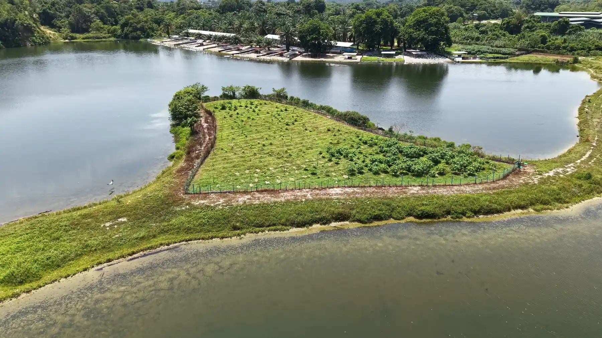
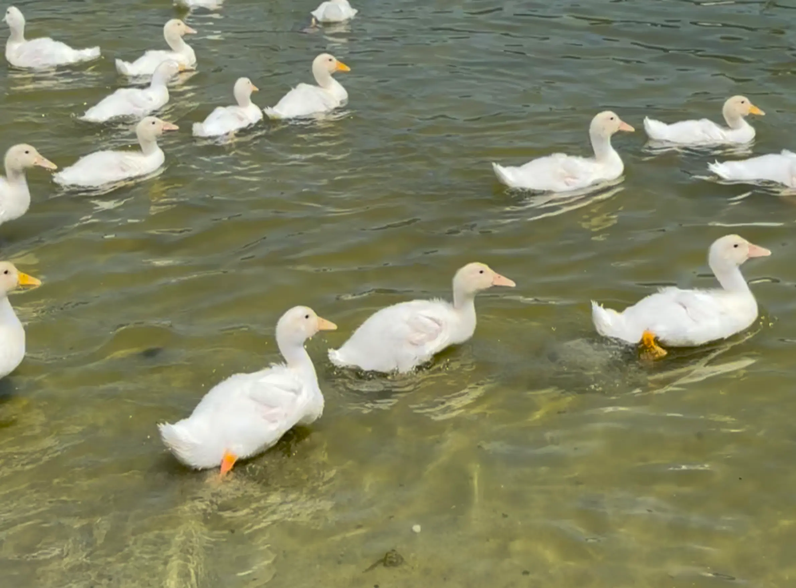
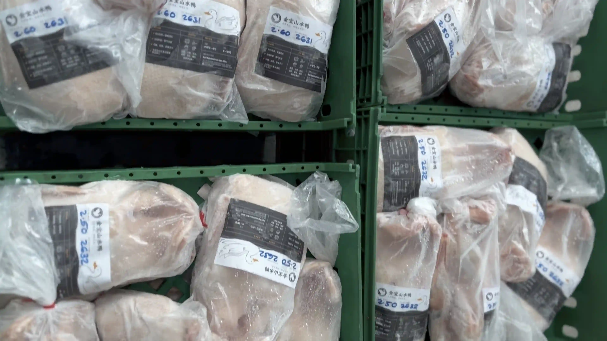

About Kampar Free Range Duck
关于金宝山水鸭
好山好水育好鸭
Why Kampar？
金宝山水鸭：寻山问水，铸就纯正品质
金宝山水鸭致力于提供最高标准的天然生态鲜鸭。我们深信「得有山又有水，鸭子才有好油水。」的传统智慧，因此坚持让鸭群远离拥挤的商业圈养，在清泉流淌、自然开阔的环境中自由放养。这种原生态的生长模式，造就了鸭肉紧实细嫩的口感与分布均匀的黄金皮下脂肪，使其成为专业烧腊师傅与高级餐厅不可或缺的顶级食材。
为了确保每一份食材都能达到食品行业的最高标准，金宝山水鸭坚持源头直供，直接对标业内最值得信赖的批发供应商体系。我们深知新鲜、安全的食材是餐饮业成功的基石，因此每一批山水鸭都经过精心筛选，确保交到零售商、餐饮服务商和家庭顾客手中的产品，始终保持着卓越的新鲜度与一致性。

B2B Partnership
正在寻找可靠的鸭子供应商？
除了零售顾客，金宝山水鸭也长期为烧腊店、餐厅、酒楼、湿巴刹与零售商提供稳定的批发供应。我们理解餐饮与零售生意最重视的是「量」与「稳」——因此无论订单大小，我们都以同一套品质标准处理，确保每一批交货都维持一致的新鲜度与规格。
- 满足不同烧腊、炖煮与烹饪需求
- 黄金比例的皮下脂肪，烤制出来皮脆肉嫩、完美锁汁
- 产地源头直发，规格统一，常年货源充足
查看我们的产品选择，或欢迎餐饮业者与零售商联系我们，洽谈长期批发合作方案。

服务范围
无论零售或批发订单，我们的新鲜配送网络涵盖以下地区，持续为客户与合作伙伴提供稳定供应。
怡保 Ipoh
金宝 Kampar
巴生谷 Klang Valley
想品尝新鲜山水鸭？
欢迎透过 WhatsApp 联系我们，了解更多产品与订购详情。
联系我们